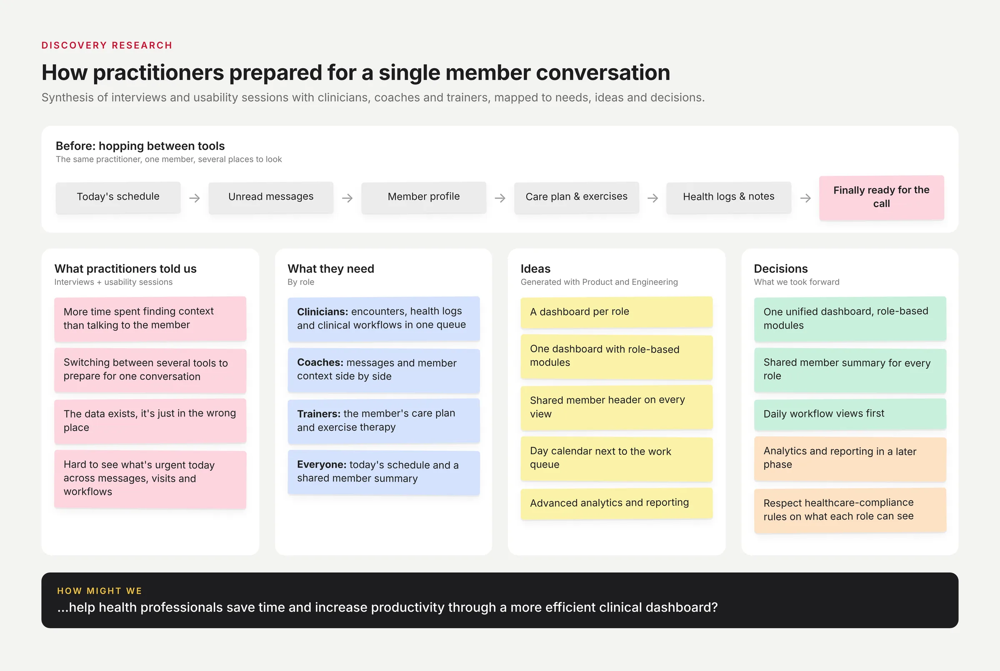
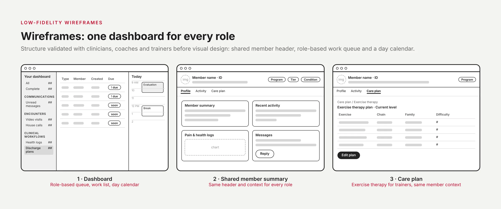
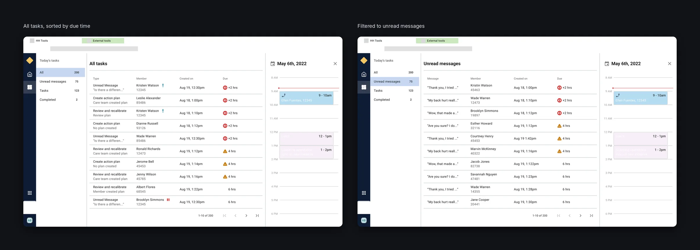
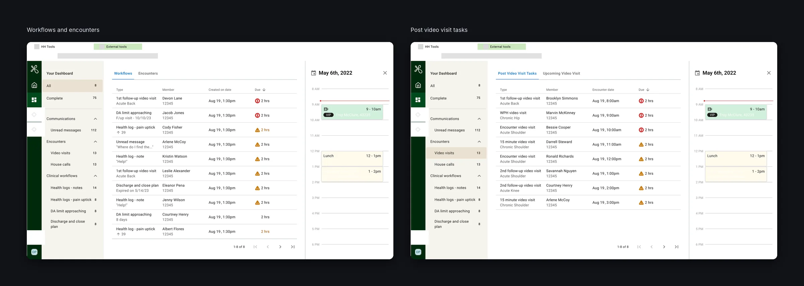
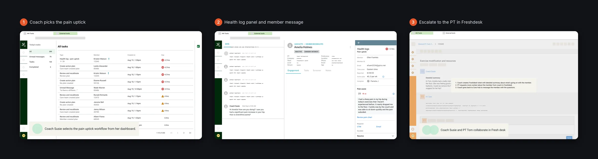
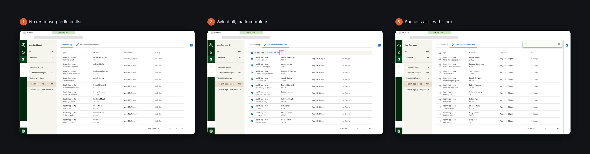
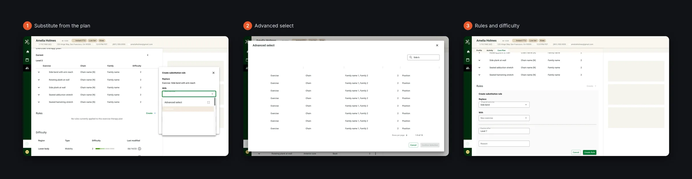
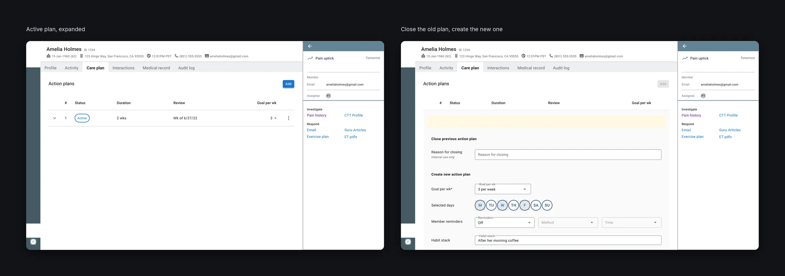
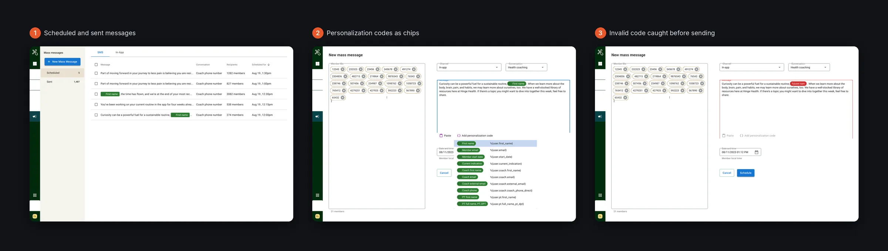

Problem Statement
How could we empower health professionals by helping them save time and increase productivity through a more efficient clinical dashboard?
Role & Responsibilities
As the Lead Product Designer, I led the design of the CareHub Dashboard — a central platform for clinicians, coaches, and trainers. I oversaw discovery, concept validation, and usability testing, and guided the team in creating scalable, data-driven design solutions.
I collaborated closely with engineering, ensuring seamless integration with backend systems and compliance with healthcare regulations. My leadership ensured the delivery of a unified dashboard that improved visibility, efficiency, and communication across care teams.
I led a small team of product designers. I onboarded new designers to the project, ran a weekly grooming session where I assigned tasks, checked on progress and removed any blockers, and oversaw design quality before anything shipped.
Discovery research
I ran interviews and usability sessions with clinicians, coaches and trainers to understand how they prepared for a single member conversation. Each role needed different work in front of them, but all of them were hopping between several places to piece together the same member context.
Mapping that journey with Product and Engineering turned the problem from “what data is missing” into “why is the context so hard to find”, which shaped every decision that followed.

Research, Options & Trade-offs
What research revealed
Clinicians and coaches switched between several tools to prepare for a single member conversation. The biggest complaint was hunting for context, not missing data.
Directions explored
- Option A: A separate dashboard per role. Dropped: duplicated work and split shared member context.
- Option B: One unified dashboard with role-based modules and a shared member summary. Chosen.
Trade-offs
We prioritized the daily workflow views over advanced analytics and reporting, which moved to a later phase, and kept healthcare-compliance requirements on what each role could see.
Wireframes
Before visual design, I worked out the structure in low fidelity: a role-based work queue on the left, the work list in the middle and today’s calendar on the right, with the same member header and tabs on every member view. Practitioners and engineering reviewed these before any pixels were polished.

High-Fidelity Designs
After validating the low-fidelity concepts, I transitioned to high-fidelity designs aligned with Hinge Health’s brand and design system. I refined UI components, typography, and hierarchy to ensure clarity and accessibility for coaches and clinicians.
Collaborating closely with engineers, I ensured feasible, production-ready designs, and created interactive prototypes to simulate real workflows for stakeholder review and usability testing.

Coach dashboard: one queue for every task
The coach dashboard puts every task across a coach’s members into one table, while member-specific details live in the sidebar. After reviews with coaches, neighborhoods and pods, we agreed on the rules that shaped it:
- Every task has a defined due date and time, with a warning before it’s due and an overdue state after, so coaches see urgency without feeling overwhelmed.
- Tasks are sorted by due time. When two are due at the same time, the order is unread messages, health log notes, pain upticks, then surgery-indication outreach.
- A sidebar filters the day’s tasks (All, Unread messages, Tasks, Completed) with live counts.
- Today’s calendar sits on the right and collapses to give the table more room.
- Quick links to Freshdesk and Help Scout stayed on the dashboard as a temporary bridge while those tools were phased out.
- We worked with the coaching team on labels, so coaching, engineering and design use the same names for each task.

PT dashboard: workflows and encounters
Physical therapists plan their day around video visits, so their dashboard splits work into two tabs: Workflows (unread messages, clinical workflows and post-visit tasks) and Encounters (upcoming video visits and house calls).
The sidebar groups filters into Communications, Encounters and Clinical workflows, with one filter per workflow: health log notes, pain upticks, DA limit approaching, and discharge and close plan. The calendar drawer is open by default for PTs, collapses into a slim right-hand nav, and has its own loading and error states.

Closing the loop on a pain uptick
A pain uptick is triggered when a member’s pain score rises by 30 points or more. We mapped the full flow with a real scenario: Amelia logs a sharp pain in her hip, and her coach, Susie, sees the uptick on her dashboard.
- 1 Open the pain uptick
- 2 Review and message the member
- 3 Escalate to the PT
- 4 Send the PT’s resources
- 5 Resolve
The workflow panel lists the actions to take. Each one deep-links to the right part of CareHub or to Freshdesk, where the coach and PT collaborate, and can be checked off. When every action is done, the coach marks the workflow complete.

Letting the queue sort itself
Many health log notes don’t need a reply, but coaches still had to open each one. Notes that a machine learning model predicts as low priority now move into a separate No response predicted list with a 48-hour SLA, so they sit at the back of the main queue.
- Selecting one or more rows turns the table header into an action bar with a bulk Mark Complete.
- Select all works across pages, and the selection persists while the coach pages through.
- Each row has its own Mark Complete action on hover.
- Counts update in real time, and a success alert with Undo hides itself after 7 seconds.

Personalizing exercise therapy
PTs needed to tailor a member’s exercise therapy without leaving the member record. The care plan now shows the current plan, its rules and difficulty in one place.
- Substitute an exercise straight from the plan, or create a substitution rule in the Rules section.
- When the dropdown isn’t enough, Advanced select opens the full exercise list with sort, filter and search.
- Hovering an exercise expands it and autoplays its video.
- Rules can be edited inline, with a duration from “Never expires” to “Current level +9”.
- Closing a form with unsaved edits asks for confirmation, and a snackbar confirms each new rule.

Action plans
Coaches build weekly action plans with members: a goal per week, the days to do it, reminders and a habit stack (for example, “after morning coffee”). Only one plan can be active, so adding a new plan closes the previous one in the same form, with a reason for closing.
We designed every status (active, due for review, review overdue, closed after review, closed without review) along with empty, loading and error states, and a warning before leaving with unsaved changes.

Mass messaging
Care team specialists needed to send one message to many members at once. The composer turns pasted member IDs into chips, flags duplicate and invalid IDs, and lets them choose the channel (SMS or in-app) and the conversation.
Personalization codes such as First name appear as chips. A mistyped code turns red before the message can be scheduled, and the landing page lists every scheduled and sent message.

Results
CareHub was adopted by 100% of health practitioners (120 clinicians, coaches and trainers), who use it daily to manage their schedules, within 8 weeks of launch.
How we measured: daily active practitioners ÷ all practitioners, from product analytics.